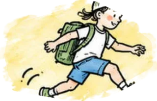

1
A body learns its way into the world at its own pace
From the floor. To the furniture. To new places.
Researchers tell us
Movement skills tend to develop in a general sequence, each new skill building on earlier ones. Children reach these milestones at different times: they are guideposts, not a race.
Active play and a variety of movement experiences help build physical, cognitive and emotional development.
Sources
- CDC. Developmental Milestones (2022).
- AAP. Motor Delays (2013).
- WHO. Guidelines on physical activity, sedentary behaviour and sleep for children under 5 years of age (2019).

The sequence matters more than the exact age at which progress happens.